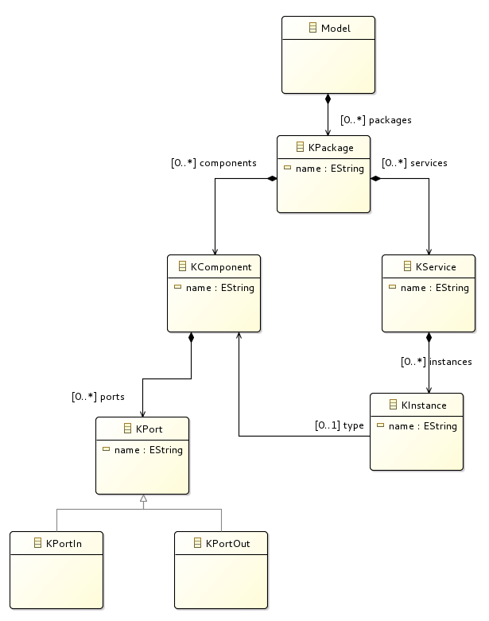

A First Grammar
The goal of this exercise is to define a grammar for a structure as sketched in the image below: A Model shall contain Packages. Every Package can contain Component definitions and "Service" definitions. A "Service" can instantiate the Components. Moreover shall a Component definition contain input ports and output ports.
All bold elements in the text above will be defined in our the grammar of our meta model.

First steps after project initialization
A grammar describes the syntax (more or less without semantic) of our domain language describing domain models. Internally, Xtext deduces an ecore model from the grammar, which can be used to display the structure of the grammar (like the image in the first part of this page). The grammar remains the master (for maintenance) and the ecore model is recreated after every change.
Note: Is is also possible to create a grammar based on an ecore model (via Eclipse Wizard).
Additional information can be found in the references list or in the offline help of Eclipse: "Help" - "Help Contents".
Root node of a model
- A grammar conists of rules, starting with the name of the rule, followed by a colon ":" and the rule itself, and is terminated by a semicolon ";".
- The first rule in the grammar (e.g. "Model") is the root of the model.
- Instead of adding elements to the model of type "Greeting", we will add elements of type "KPackage" (change the name "Greeting" to "KPackage").
- See also (Mooji et al., 2017a)
Attributes, Composition
A "KPackage" element, in turn, shall be composed of "KComponent" and "KService" elements:

The syntax for the composition is given as follows:
KPackage: 'package' name=ID '{'
(
components += KComponent |
services += KService
)*
'}'
;
- 'package', '{', '}'
- represent keywords of our language.
- name=ID
- "name" is an attribute in the meta mode (the attribute "name" has a special meaning: it is used to indentify elements).
- "=" means: this is a scalar value (no list of values).
- ID is a terminal (see grammar, and click "F3" on "org.eclipse.xtext.common.Terminals" to see definition).
- components += KComponent
- "components" is an attribute in the meta model.
- "+=" means, this is a list of values (add one element to this list here)
- "KComponent" and "KService" are rule definitions like "KPackage" (need to be added)
- ( ... | ... )*
- Everything with the brackets can be repeated 0 to n times ("+" instead of "*" means 1 to n times).
- "|" is a logical OR.
Modify the grammar to allow to enter the following model. Test the grammar with this example (run the grammar as described in the previous section): "Run As" - "Xtext Artifacts". The new Eclipse instance can easily be started via the Debug icon).
package test1 {
Component PC {
}
Component DF {
}
service MyService {
}
}
References

KInstance: 'instance' name=ID ':' type=[KComponent];
- type=[KComponent]
- "type" is an attribute in the meta model.
- "[KComponent]" is a reference to a "KComponent" element.
- For more inforamtion see the references list.
Specialization

KPort: KPortIn|KPortOut ; KPortIn: 'port_in' name=ID '{' '}' ; KPortOut: 'port_out' name=ID '{' '}' ;
- Base: SpecialA|SpecialB;
- Defines a base class (base rule) for the specializations separated by "|".
- Common attributes are availabe in the base class (here: "name")
- For more inforamtion see the references list.